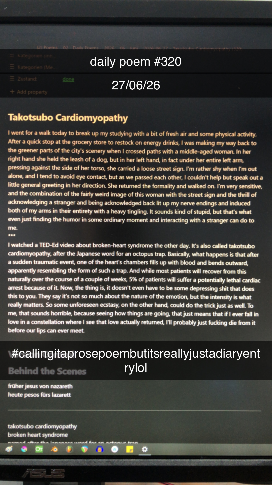

Takotsubo Cardiomyopathy
I went for a walk today to break up my studying with a bit of fresh air and some physical activity. After a quick stop at the grocery store to restock on energy drinks, I was making my way back to the greener parts of the city's scenery when I crossed paths with a middle-aged woman. In her right hand she held the leash of a dog, but in her left hand, in fact under her entire left arm, pressing against the side of her torso, she carried a loose street sign. I'm rather shy when I'm out alone, and I tend to avoid eye contact, but as we passed each other, I couldn't help but speak out a little general greeting in her direction. She returned the formality and walked on. I'm very sensitive, and the combination of the fairly weird image of this woman with the street sign and the thrill of acknowledging a stranger and being acknowledged back lit up my nerve endings and induced both of my arms in their entirety with a heavy tingling. It sounds kind of stupid, but that's what even just finding the humor in some ordinary moment and interacting with a stranger can do to me.
***
I watched a TED-Ed video about broken-heart syndrome the other day. It's also called takotsubo cardiomyopathy, after the Japanese word for an octopus trap. Basically, what happens is that after a sudden traumatic event, one of the heart's chambers fills up with blood and bends outward, apparently resembling the form of such a trap. And while most patients will recover from this naturally over the course of a couple of weeks, 5% of patients will suffer a potentially lethal cardiac arrest because of it. Now, the thing is, it doesn't even have to be some depressing shit that does this to you. They say it's not so much about the nature of the emotion, but the intensity is what really matters. So some unforeseen ecstasy, on the other hand, could do the trick just as well. To me, that sounds horrible, because seeing how things are going, that just means that if I ever fall in love in a constellation where I see that love actually returned, I'll probably just fucking die from it before our lips can ever meet.
